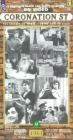
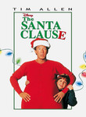
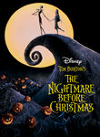
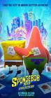
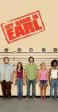
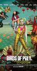
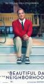
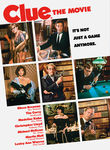
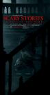
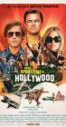

Historical: IMDb All-Time USA Box office
http://www.imdb.com/boxoffice/alltimegross
Movies that have grossed over $100,000,000 at the box office during their theatrical runs (includes re-release, does not adjust for inflation).
Showing Movies that were previously on this list. (Historical tracking started near the start of 2010.)- Normal View
List contains: 1505 items, 2213 hours. (275 are missing runtime)
Movies that have grossed over $100,000,000 at the box office during their theatrical runs (includes re-release, does not adjust for inflation).
Showing Movies that were previously on this list. (Historical tracking started near the start of 2010.)- Normal View
List contains: 1505 items, 2213 hours. (275 are missing runtime)
Stephen Klancher
...has seen 440
...has seen 929.4 hours
...has not seen 1283.6 hours

Timeline - Covers
Most Recent:
Captain Marvel
First Unseen:
Messy (# 2)
...has seen 440
...has seen 929.4 hours
...has not seen 1283.6 hours
Timeline - Covers
Most Recent:
Captain Marvel
First Unseen:
Messy (# 2)
Seen 14 times, Last seen December 25, 2022

It's a Wonderful Life (1946)
Stephen Klancher: SEEN 
This was our Christmas movie growing up with my dad and it has ingrained a like of Jimmy Stewart in my brain.
Seen 20 times, Last seen December 25, 2022
Seen 1901 times, Last seen October 16, 2022
Avatar (2009)
Stephen Klancher: January 9, 2010
The plot is basically FernGully, which isn't a major criticism, it just follows an unsurprising path. The visuals were amazing. The 3D was very cool, but even without that the environments were incredible. It made me think of exploring new areas in World of Warcraft for the first time.
Seen 1888 times, Last seen September 11, 2022

Jaws (1975) Releases on 1975-06-20
Stephen Klancher: February 16, 2009
Body in the boat scared the fuck out of me. That was an intense movie.
Seen 55 times, Last seen October 31, 2021

Shang-Chi and the Legend of the Ten Rings (2021)
Seen 27 times, Last seen August 15, 2021
Escape Room: Tournament of Champions (2021)
Seen 28 times, Last seen August 3, 2021
Seen 37 times, Last seen July 18, 2021
The Conjuring: The Devil Made Me Do It (2021)
Seen 45 times, Last seen June 27, 2021
Seen 12 times, Last seen June 27, 2021
The House Next Door: Meet the Blacks 2 (2021)
Seen 30 times, Last seen June 19, 2021

Seen 1 times, Last seen May 30, 2021
Seen 13 times, Last seen May 22, 2021
Die Bruderschaft des Cassoulet (2007) Airs on 2007-01-15
S1 - E6 of Sarah Wiener's Culinary Adventures
S1 - E6 of Sarah Wiener's Culinary Adventures
Seen 6 times, Last seen May 8, 2021

Scott Pilgrim vs. The World (2010)
Stephen Klancher: August 16, 2010
Ridiculously awesome. This is the style that comics and anime should take for live action film adaptations. The video game flavor to things was just pure joy. Whenever I end up really liking something I realize that sound has a lot to do with it. This movie used video game sounds and music throughout. There is absolutely a Pavlovian response as the movie uses many sounds from games that are tied to rewards... There was a fight where every hit had the sound of Sonic collecting rings. The humor was very fun, but the style of every part of this just tapped into the joy center of my brain.
Seen 11 times, Last seen May 8, 2021


Seen 5 times, Last seen April 10, 2021
Seen 6 times, Last seen April 4, 2021
First Half Final Round: Goldrick vs. Ortega/Kropp vs. Lentz (1991) Airs on 1991-02-14
S4 - E13 of American Gladiators
S4 - E13 of American Gladiators

Seen 47 times, Last seen March 26, 2021
Seen 10 times, Last seen March 26, 2021
Seen 1883 times, Last seen February 13, 2021

The Lord of the Rings: The Fellowship of the Ring (2001) Releases on 2001-12-19
Stephen Klancher: SEEN
I read half-way through the books, quit for a while, then finished right before this came out. I actually like the movies better. I enjoy all three movies, but one notable thing about this one was much fun it was that everyone around me was really into it at the time. The fact that the girls I was friends with and girlfriend at the time were drooling over the actors just added another reason for everyone to be enthusiastic and want to keep rewatching it. So yeah, fun times. :-)
Seen 74 times, Last seen January 24, 2021
Seen 29 times, Last seen January 16, 2021

Alien (1979)
Stephen Klancher: January 15, 2008
I thought I had seen it before. Finally saw for sure now that I'm going through all the Alien and Predator movies with Nick.
Very cool movie.
Very cool movie.
Seen 39 times, Last seen January 10, 2021
Seen 38 times, Last seen January 2, 2021
Christmas Vacation (1989) Releases on 1989-12-01
Seen 1926 times, Last seen January 2, 2021
Elf (2003)
Stephen Klancher: November 28, 2009
It pains the OCD part of my brain to mark this as watched when I missed the beginning and was not in the room the whole time... It was alright. It's Will Ferrell, sometimes I think he's funny and sometimes not. It's probably mood as much as content with him.
Seen 1886 times, Last seen December 27, 2020
How the Grinch Stole Christmas (2000)
Seen 1 times, Last seen December 20, 2020
Standing on the Shoulders of Kubrick: The Legacy of 2001 (2007)

Seen 9 times, Last seen December 12, 2020
Die Hard (1988) Releases on 1988-07-15
Stephen Klancher: April 13, 2009
Yeah, I really hadn't seen Die Hard until today. That was a great action movie. I am very much a Bruce Willis fan, and Alan Rickman is a fantastic villain. Contrary to many action movies where there are only a few scenes of interest, I enjoyed this entire movie.
Seen 1881 times, Last seen December 4, 2020

The Santa Clause (1994)
Seen 9 times, Last seen November 28, 2020
Fate/stay night: Heaven's Feel III. Spring Song (2020)
Seen 1889 times, Last seen November 21, 2020

Toy Story (1995)
Stephen Klancher: SEEN
Pixar is always pretty solid and Tim Allen plus Tom Hanks make for some fun recognizable voice acting.
Seen 8 times, Last seen November 21, 2020
Seen 525 times, Last seen November 21, 2020

Guardians of the Galaxy (2014)
Stephen Klancher: August 12, 2014
Incredibly fun! All the more so since I went in thinking this was a bunch of characters unknown to me, and then finding out I knew half of them from the Infinity Trilogy.

Seen 4 times, Last seen November 8, 2020
Seen 26 times, Last seen November 7, 2020

The Nightmare Before Christmas (1993)
Stephen Klancher: November 4, 2007
I first saw this with Justine in 3D on the IMAX screen. Fun music!
Seen 1892 times, Last seen November 7, 2020
Monsters, Inc. (2001)
Seen 12 times, Last seen November 1, 2020

Seen 69 times, Last seen October 24, 2020
Seen 1917 times, Last seen October 17, 2020

Star Wars: Episode V - The Empire Strikes Back (1980)
Stephen Klancher: SEEN
This was the one I watched least when I was younger. The slightly less familiarity has made it more attractive for rewatching in later years. Also it's Star Wars. <3
Seen 30 times, Last seen October 17, 2020

Seen 6 times, Last seen October 3, 2020

Seen 46 times, Last seen October 2, 2020

The SpongeBob Movie: Sponge on the Run (2020)
Seen 26 times, Last seen September 27, 2020
The Personal History of David Copperfield (2019)
Seen 1889 times, Last seen August 30, 2020

Back to the Future (1985)
Stephen Klancher: SEEN
I love the Back to the Future trilogy. Yes even the third one. I've always especially loved the music. Watching Predator at some point I was wondering why it was reminding me of Back to the Future... and it turns out the same guy did the music...

Seen 0 times, Last seen August 17, 2020
Seen 48 times, Last seen August 16, 2020


Seen 3 times, Last seen August 14, 2020
Juvenile Delinquents -- New World Order (2020)

Seen 2 times, Last seen August 12, 2020

Killer Raccoons 2: Dark Christmas in the Dark (2019)

Seen 92 times, Last seen July 16, 2020

Black Panther (2018) Releases on 2018-02-16
Stephen Klancher: February 22, 2018
Seen 37 times, Last seen July 6, 2020
Seen 12 times, Last seen March 15, 2020
Seen 34 times, Last seen March 15, 2020

Birds of Prey (and the Fantabulous Emancipation of One Harley Quinn) (2020)


Seen 12 times, Last seen December 28, 2019

Seen 28 times, Last seen December 22, 2019

A Beautiful Day in the Neighborhood (2019)

Seen 10 times, Last seen November 22, 2019

Casablanca (1942)
Stephen Klancher: August 4, 2003
I borrowed and watched this summer of 2002. Even then I had a vague idea that I wanted to see some of the most well known movies, with the IMDB top 250 as my idea for a good start.
I really enjoyed it! And so many elements or lines in it that could be called cliche now were actually their origin. This is the movie that solidified my interest in watching well rated "old movies." Compare to Citizen Kane.
I really enjoyed it! And so many elements or lines in it that could be called cliche now were actually their origin. This is the movie that solidified my interest in watching well rated "old movies." Compare to Citizen Kane.


Seen 58 times, Last seen November 22, 2019

Hacksaw Ridge (2016) Releases on 2016-11-04
Seen 10 times, Last seen November 21, 2019

City of God (2002) Releases on 2004-02-13
Stephen Klancher: SEEN
I got a hold of this movie because of Erin near the beginning of college, although I can't remember for certain if I watched it with her or not. The main impression I remember about this movie is that it was vivid both in color and content.
Seen 1891 times, Last seen November 20, 2019

Star Wars: Episode IV - A New Hope (1977)
Stephen Klancher: SEEN
I am very much a Star Wars fan. I've read about 40 books, played a handful of games, and seen most of what there is to see. There were some summers growing up where I was mostly watching the Star Wars trilogy and playing Mario 3.
2011-02-26 - Watched Star Wars Begins, the excellent fan-made documentary.
2011-02-26 - Watched Star Wars Begins, the excellent fan-made documentary.
Seen 1886 times, Last seen November 19, 2019

Inception (2010) Releases on 2010-07-16
Stephen Klancher: July 17, 2010
Dreams within dreams... there was never a chance I wouldn't like this movie. It was incredibly fun.
Seen 10 times, Last seen November 17, 2019

Fight Club (1999)
Stephen Klancher: SEEN
There's so much that is cool about this movie. But mostly the impact of the reveal the first time you watch it. The sort of Sixth-Sense change where you can then rewatch it as an entirely different experience.
Seen 1889 times, Last seen November 16, 2019

The Lord of the Rings: The Return of the King (2003) Releases on 2003-12-17
Stephen Klancher: December 17, 2003
Probably my favorite of the trilogy, but they are all fantastic.
Seen 10 times, Last seen November 15, 2019

Schindler's List (1993)
Stephen Klancher: SEEN
I watched this in my 9th grade history class. Liam Neeson back when his only power was being German. No force, no lightsaber. But seriously, this is a serious movie. I don't remember much of the specifics at this point, but watching Life is Beautiful more recently made me think of watching this.
Seen 1891 times, Last seen November 14, 2019

The Dark Knight (2008)
Stephen Klancher: July 19, 2008
Saw on the IMAX twice on the first Saturday after release. OMG so good! Got a picture of me with the Joker at the theater too.
Seen 9 times, Last seen November 13, 2019

12 Angry Men (1957)
Stephen Klancher: October 19, 2007
I actually saw the 1997 version first (Tony Danza!), but I love them both. Such a great thing to have a story focused down to pretty much one room and just watching the characters interact. I liked this (both versions actually) a lot.
Seen 9 times, Last seen November 12, 2019

The Good, the Bad and the Ugly (1966)
Stephen Klancher: SEEN
I knew I had enjoyed Unforgiven and Shane, but this was the movie which convinced me: I really enjoy westerns! I watched this with a girl I met on a bus. She forgot her purse and I argued with the bus driver and made him wait until she came running up from the previous bus stop. Obviously the only thing to do was invite her over for dinner and a western right?
Seen 1849 times, Last seen November 11, 2019

Pulp Fiction (1994) Releases on 1994-10-14
Stephen Klancher: SEEN
Very fun. Reading Quentin Tarantino and Philosophy (http://www.amazon.com/Quentin-Tarantino-Philosophy-Popular-Culture/dp/0812696344) made it even more so.
Seen 8 times, Last seen November 10, 2019

The Godfather: Part II (1974)
Stephen Klancher: January 2, 2004
I can't say I remember a lot about this movie other than the fact that I watched with Bob not long after college started. And that he heard the third movie was bad so he refused to watch it... so this is where we stopped.
Seen 1872 times, Last seen November 9, 2019

The Godfather (1972) Releases on 1972-03-24
Stephen Klancher: SEEN
I don't remember much about this movie directly. The main thing I remember is a comment from a friend while we all watched it together the summer before college. My girlfriend at the time was either disinterested or bothered by the violence, whereas I thought it was a cool movie. By my friend's observation, this was the first time in a long time that I insisted on an opinion contrary to hers. I don't remember being that bad, but the observation was memorable, and this movie reminds me of it.
Seen 12 times, Last seen November 9, 2019
Seen 7 times, Last seen November 8, 2019

The Shawshank Redemption (1994)
Stephen Klancher: SEEN
I'm not sure it forever deserves the top spot on IMDB, but definitely a good movie. I remember watching it on TV some night in Jr High when I was supposed to be working some project... let's see, do a diorama of a scene from 1984 or watch Shawshank? Hmm...
Seen 66 times, Last seen November 7, 2019
Untitled Avengers Movie (2019) Releases on 2019-05-03

Seen 100 times, Last seen November 5, 2019

La La Land (2016) Releases on 2016-12-16

Seen 6 times, Last seen November 3, 2019

The Current War (2017) Releases on 2018-01-19

Seen 30 times, Last seen November 1, 2019

Clue (1985) Releases on 1969-12-31

Seen 713 times, Last seen October 31, 2019

The Wolf of Wall Street (2013)


Seen 26 times, Last seen October 28, 2019
Invasion of the Body Snatchers (1956) Releases on 1969-12-31


Seen 1885 times, Last seen October 23, 2019

Finding Nemo (2003)
Stephen Klancher: SEEN
The main thing I remember about this movie was that it had very pretty color. And I think I watched it with a few other people in the common room of our floor of my freshman dorm.


Seen 6 times, Last seen October 19, 2019

The Apartment (1960)
Stephen Klancher: December 13, 2008
Early in the movie I felt annoyed that Lemmon felt too much like his comedy character in Some Like It Hot, but overall both he and MacLaine were great in this movie.
Seen 6 times, Last seen October 18, 2019

Braveheart (1995)
Stephen Klancher: SEEN
Hmm, I'm not 100% I've seen the beginning of this movie. See this was the second rated R movie I ever saw, with the first being the movie Speed. My mom was on her honeymoon and I was with cousins and other family at a hotel whereever we were on the coast. So we got away with renting rated R movies. I watched Speed in one room and went to the next room and joined them in watching Braveheart. I mostly just remember the iconic, "You can take our lives, but you can never take our freedom!" Also I saw a statue of William Wallace in front of a castle years later. I should rewatch it someday just because now I know and love Patrick McGoohan.

Seen 1830 times, Last seen October 16, 2019

Million Dollar Baby (2004)
Stephen Klancher: July 4, 2009
Excellent movie! A lot like Gran Torino. Those three are fantastic actors. Some really hard to watch scenes, but just very good.
Seen 6 times, Last seen October 15, 2019

Hotel Rwanda (2004)
Seen 7 times, Last seen October 14, 2019

V for Vendetta (2005) Releases on 2006-03-17
Stephen Klancher: March 17, 2006
I loved this movie. In terms of pure enjoyment coming out of the theater this ranks near the top for me. All kinds of cool.
Seen 8 times, Last seen October 13, 2019

Monty Python and the Holy Grail (1975)
Stephen Klancher: SEEN
I had heard every joke long before I actually saw this, so while it was funny, it was underwhelming and not very memorable.
Seen 1884 times, Last seen October 12, 2019

Star Wars: Episode VI - Return of the Jedi (1983)
Seen 7 times, Last seen October 11, 2019

Mr. Smith Goes to Washington (1939)
Seen 1884 times, Last seen October 8, 2019

The Lion King (1994)
Stephen Klancher: SEEN
Back in the good old days of Disney movies... Scar was a great villain and the song Be Prepared is incredible.
Seen 6 times, Last seen October 7, 2019

Cinema Paradiso (1988) Releases on 1969-12-31
Stephen Klancher: SEEN
I watched this with my mom in Bakersfield at some point. I remember hearing the title and not thinking I was interested, until either I looked it up or she told me it was on the IMDb list... now it was part of the mission! The movie itself was okay...
Seen 7 times, Last seen October 6, 2019

The Prestige (2006)
Stephen Klancher: SEEN
I liked this a lot. Although I seem to remember that something about it lead to an argument. Whatever, very fun.
Seen 76 times, Last seen October 6, 2019

The Lion King (2019) Releases on 2019-07-19
Seen 1871 times, Last seen October 5, 2019

The Green Mile (1999)
Seen 1875 times, Last seen October 4, 2019

Gladiator (2000)
Stephen Klancher: SEEN
Fun movie... I always picture the "walking through the fields" sequence... Also, Battle!
Seen 1880 times, Last seen October 1, 2019
Rain Man (1988) Releases on 1969-12-31
Stephen Klancher: SEEN
I remember watching this with Punchie... I assume we finished it, although I can't say I remember how it ended.
Seen 1875 times, Last seen October 1, 2019

Terminator 2: Judgment Day (1991)
Seen 1895 times, Last seen October 1, 2019

Crouching Tiger, Hidden Dragon (2000)
Stephen Klancher: SEEN
I remember being so pleased when I watched this and, without looking at the subtitles, I understood the phrase "I don't know" spoken in Chinese.

Seen 1862 times, Last seen September 29, 2019

The Truman Show (1998)
Stephen Klancher: SEEN
I loved this movie. The only problem was it gave me a more specific scenario for my general paranoia to latch on to. Clearly my life is full of people behind the scenes watching and manipulating my life. If I tune my radio just right I might be able to hear their radio chatter...
Seen 55 times, Last seen September 29, 2019
Fast & Furious Presents: Hobbs & Shaw (2019)
Seen 7 times, Last seen September 28, 2019

Barry Lyndon (1975)
Seen 7 times, Last seen September 27, 2019

Howl's Moving Castle (2004) Releases on 1969-12-31
Seen 8 times, Last seen September 26, 2019

Mary and Max (2008) Releases on 2009-04-09
Stephen Klancher: December 11, 2010
Weirdly funny and endearing. I was surprised how much I enjoyed it.
Seen 7 times, Last seen September 25, 2019

Network (1976) Releases on 1969-12-31
Stephen Klancher: April 25, 2010
A lot of cool moments throughout this. I enjoyed watching Faye Dunaway in Bonnie and Clyde just recently and she and William Holden were great in this.
Seen 7 times, Last seen September 24, 2019

Into the Wild (2007)
Stephen Klancher: April 22, 2009
Good movie. Better than I thought it would be from the description and suited my mood today.
Seen 7 times, Last seen September 23, 2019

My Neighbor Totoro (1988)
Stephen Klancher: April 21, 2010
Cat-bus is awesome. Most of what I like in this movie is better done in Spirited Away. But still this was a relaxing movie with good animation and occasionally good music too.
Seen 7 times, Last seen September 22, 2019

Kill Bill: Vol. 1 (2003) Releases on 2003-10-10
Stephen Klancher: October 18, 2003
It was super exciting to go see this in the theater. I had watched other Tarantino movies over the previous year or two and introduced them to Brett sometime after we met. And seeing a movie like that in a theater down the street from a university makes for a fun crowd.

Seen 9 times, Last seen September 21, 2019

It Happened One Night (1934)
Stephen Klancher: July 7, 2009
I was amused at the Walls of Jericho motif and the fact that they asked for a trumpet at the end. This time, dear, he gave a damn.
Seen 9 times, Last seen September 20, 2019

Cool Hand Luke (1967)
Stephen Klancher: June 21, 2009
Aptly named... he's a cool character. The Lucy and 50 eggs scenes were fun. I liked the simple question he asked of god near the end: "You made me like I am; just where do I fit?"
Seen 8 times, Last seen September 19, 2019

The Big Lebowski (1998) Releases on 1998-02-15
Stephen Klancher: SEEN
Brett introduced me to Lebowski and I have since watched it many times. Love it.
Seen 8 times, Last seen September 18, 2019

Fargo (1996) Releases on 1996-04-05
Seen 9 times, Last seen September 17, 2019

Wild Strawberries (1957)
Seen 1116 times, Last seen September 17, 2019

Silver Linings Playbook (2012) Releases on 2012-11-21
Seen 37 times, Last seen September 16, 2019

Blade Runner (1982)
Stephen Klancher: SEEN
I watched this and only thought it was ok. I found out later that the Director's Cut which I watched was lacking the narration of the original. I often really enjoy narration in movies and might have enjoyed this more if I had a clearer understanding of what was going on in some parts. Maybe someday I'll have to rewatch the original version.
Seen 1885 times, Last seen September 15, 2019

Up (2009)
Stephen Klancher: June 14, 2009
That was a fantastic movie. Visually very pretty. The kid and the dog are a great counterpoint to the old man. Not many movies manage to be so happy and kid -friendly and actually be so amazing. I walked out of the theater happy!
Seen 34 times, Last seen September 15, 2019

Scary Stories to Tell in the Dark (2019)
Seen 46 times, Last seen September 15, 2019

Once Upon a Time in Hollywood (2019)
Seen 9 times, Last seen September 14, 2019

2001: A Space Odyssey (1968)
Stephen Klancher: SEEN
I think I watched parts of this in my Physics class in high school, then came home and watched the rest. I think there was no justification other than that Mr Loritz just wanted to watch the movie.
Seen 9 times, Last seen September 13, 2019

Lawrence of Arabia (1962)
Stephen Klancher: July 2, 2008
I remember my mom telling me for a long time that this was her favorite movie, so I was excited to watch it. Very cool epic.
Seen 9 times, Last seen September 12, 2019

The Lives of Others (2006)
Seen 9 times, Last seen September 11, 2019

Aliens (1986)
Stephen Klancher: January 17, 2008
Game over man! A totally different kind of cool than the first one. Plus like half of the sounds from StarCraft are from this movie.
Seen 1867 times, Last seen September 10, 2019

American Beauty (1999)
Stephen Klancher: December 31, 2002
Fantastic movie. Many good quotables. I tend to rather watch something new instead of rewatching anything, but if I see this on I'm completely unable to pull myself away.
Seen 14 times, Last seen September 9, 2019

Vertigo (1958) Releases on 1969-12-31
Seen 8 times, Last seen September 8, 2019

Citizen Kane (1941)
Stephen Klancher: February 12, 2008
Overrated. Compare to Casablanca because they are both "old movies" (1 year apart) and both always ranked high on movie lists.
Seen 1148 times, Last seen September 7, 2019

Django Unchained (2012) Releases on 2012-12-25
Seen 8 times, Last seen September 6, 2019

Spirited Away (2001) Releases on 2001-07-20
Stephen Klancher: April 6, 2003
I watched with in a theater in Bakersfield with my mom. I don't know if it was a rerelease or late after the release or if this is all they did in Bakersfield, but I seem to remember that it was only playing on this one screen in town and it was an abnormally small one.
I really enjoyed the animation and the fantasy of the whole setting.
I really enjoyed the animation and the fantasy of the whole setting.
Seen 8 times, Last seen September 5, 2019

City Lights (1931)
Stephen Klancher: October 20, 2008
A few lol moments. I'm not very into silent films. I think the main role they should play in modern times is a lesson for filmmakers: You can communicate without saying something directly in dialog.
Seen 11 times, Last seen September 4, 2019

Dr. Strangelove or: How I Learned to Stop Worrying and Love the Bomb (1964)
Stephen Klancher: SEEN
Peter Sellers is amazing. Just remember, "you can't fight in here! This is the War Room!"
Seen 1879 times, Last seen September 3, 2019

Raiders of the Lost Ark (1981)
Stephen Klancher: SEEN
I love Indiana Jones and Harrison Ford. I watched a lot of Star Wars and Indiana Jones while growing up. Just thinking about it makes me want to watch again...

Seen 51 times, Last seen August 1, 2019

Donnie Darko (2001) Releases on 1969-12-31
Stephen Klancher: SEEN
I remember getting mad because I was watching this at Alyson's house with a group where half of the people were really interested in the movie and the less interested half were making it hard to hear and enjoy it. Regardless it was fun. I always looked for more meaning in it than I was able to find though. But it created a great atmosphere and was a lot of fun to watch.


Seen 39 times, Last seen July 24, 2019
Memento (2000) Releases on 2000-10-11
Stephen Klancher: SEEN
Showing events out of chronological order can range from confusing to really cool. Memento used it in a gimmicky way, but it turned out great.
Seen 20 times, Last seen July 24, 2019

A Monster Calls (2016) Releases on 2016-10-21
Seen 6 times, Last seen July 22, 2019

Gandhi (1982) Releases on 1969-12-31
Stephen Klancher: January 20, 2010
I learn more from Hollywood than I ever did from school. Seems like some of this stuff would have been cool to learn more about in a history class.

Seen 7 times, Last seen July 16, 2019

The Wizard of Oz (1939) Releases on 1939-08-25
Stephen Klancher: SEEN
I liked the Wizard of Oz and have often been excited to see newer takes on it. At some point my mom took me to see Wicked and I loved it. Though it turned out disappointing, I remember being excited over the SciFi variant Tin Man. Also, Zardoz. haha.

Seen 1 times, Last seen July 3, 2019

Moon (2009) Releases on 2009-07-10
Stephen Klancher: August 8, 2010
Pretty cool, although I feel like once the viewer understands what is going on there wasn't much in the way of twists or surprises. Still fun to watch though.
Seen 29 times, Last seen July 1, 2019

The Terminator (1984) Releases on 1969-12-31
Stephen Klancher: May 13, 2009
I was surprised to realize I had not actually seen this. It seemed like I must have, so I had already marked it as seen. Really really shows its age at this point, but still a decent movie. The second is much better though. Part of the problem is I already know everything about this from 2 sequels and part of a TV show. Glad I made sure I had seen this before T4 comes out.


Seen 7 times, Last seen June 13, 2019

Captain Fantastic (2016) Releases on 2016-07-08
Seen 8 times, Last seen June 1, 2019
Reservoir Dogs (1992) Releases on 1969-12-31
Stephen Klancher: March 25, 2003
I remember Sean Florin recommending this movie to me long long ago. It was one of the earliest movies I downloaded and I invited a few friends over to watch it with me. It was an amazing movie to go into knowing nothing and having no expectations.
Seen 5 times, Last seen May 28, 2019
Magnolia (1999)
Stephen Klancher: May 20, 2010
Frogs, what the fuck? Long but fun to watch... so many good people in it. Tom Cruise and William H Macy were fun to watch and I always like seeing Philip Seymour Hoffman.
Seen 23 times, Last seen May 28, 2019
Constantine (2005)
Stephen Klancher: SEEN
I saw this in a free screening at UCSD before it came out. I thought it was very cool. I very much liked both the villainous angel and the whole "devil will collect him personally" thing.
Seen 5 times, Last seen May 19, 2019

The Maltese Falcon (1941)
Stephen Klancher: SEEN
One of the early "old" movies that I watched. Enjoying it firmed up the notion that I would actually go through the IMDb list.
Seen 56 times, Last seen May 13, 2019
Captain Marvel (2019) Releases on 2019-03-08
Stephen Klancher: March 30, 2019
Seen 3 times, Last seen May 1, 2019

Kiss Kiss Bang Bang (2005)

Seen 4 times, Last seen April 30, 2019
Legends of the Fall (1994) Releases on 1995-01-13

Seen 10 times, Last seen April 25, 2019

Groundhog Day (1993) Releases on 1969-12-31
Stephen Klancher: SEEN
The joke is obvious but it's also the truth: I watched this movie over and over and over. This was one of a handful of movies we rewatched frequently growing up at my dad's house. I love Bill Murray and I love this movie.
Seen 43 times, Last seen April 14, 2019
How to Train Your Dragon: The Hidden World (2019)


Seen 61 times, Last seen February 16, 2019

Spider-Man: Into the Spider-Verse (2018)

Seen 40 times, Last seen February 2, 2019

Mary Poppins Returns (2018) Releases on 2018-12-25


Seen 34 times, Last seen December 22, 2018

Fantastic Beasts: The Crimes of Grindelwald (2018)
Seen 20 times, Last seen November 24, 2018
The Nutcracker and the Four Realms (2018)

Seen 44 times, Last seen November 22, 2018

Blade Runner 2049 (2017) Releases on 2017-10-06
Stephen Klancher: October 12, 2017
Seen 27 times, Last seen October 20, 2018
The House with a Clock in Its Walls (2018)
Seen 55 times, Last seen October 13, 2018

Crazy Rich Asians (2018)
Stephen Klancher: December 11, 2018

Seen 55 times, Last seen September 22, 2018

M:I 6 - Mission Impossible (2018) Releases on 2018-07-27
Seen 41 times, Last seen September 15, 2018
Christopher Robin (2018) Releases on 2018-08-03
Seen 34 times, Last seen September 15, 2018
BlacKkKlansman (2018) Releases on 2018-08-10
Stephen Klancher: March 1, 2019
Seen 20 times, Last seen September 1, 2018
Slender Man (2018) Releases on 2018-08-10
Seen 41 times, Last seen August 25, 2018
Hotel Transylvania 3: Summer Vacation (2018) Releases on 2018-07-13
Seen 34 times, Last seen August 25, 2018
Mamma Mia! Here We Go Again (2018) Releases on 2018-07-20
Seen 27 times, Last seen August 18, 2018
The Equalizer 2 (2018) Releases on 2018-07-20
Seen 41 times, Last seen August 18, 2018
Ant-Man and the Wasp (2018) Releases on 2018-07-06
Seen 13 times, Last seen August 18, 2018

The Spy Who Dumped Me (2018) Releases on 2018-08-03
Seen 55 times, Last seen August 11, 2018

Incredibles 2 (2018) Releases on 2018-06-15
Stephen Klancher: June 17, 2018
Seen 6 times, Last seen August 11, 2018
The Darkest Minds (2018) Releases on 2018-08-03
Seen 13 times, Last seen August 11, 2018
Teen Titans Go! To the Movies (2018) Releases on 2018-07-27
Seen 41 times, Last seen August 4, 2018

Jurassic World: Fallen Kingdom (2018) Releases on 2018-06-22
Seen 27 times, Last seen August 4, 2018
The First Purge (2018) Releases on 2018-07-04
Seen 6 times, Last seen July 28, 2018
Unfriended: Dark Web (2018) Releases on 2018-07-20
Seen 13 times, Last seen July 28, 2018
Sorry to Bother You (2018) Releases on 2018-07-06
Seen 2 times, Last seen July 21, 2018

Annie Hall (1977) Releases on 1977-04-20
Stephen Klancher: SEEN
I watched this while doing other things and I'm never sure if that means I'm not giving something a fair chance, but I didn't care for this movie.
Seen 20 times, Last seen July 21, 2018
Sicario: Day of the Soldado (2018) Releases on 2018-06-29


Seen 20 times, Last seen July 14, 2018
Won't You Be My Neighbor? (2018) Releases on 2018-01-19
Seen 41 times, Last seen July 7, 2018

Solo: A Star Wars Story (2018) Releases on 2018-05-25
Stephen Klancher: May 26, 2018
Seen 62 times, Last seen June 30, 2018

Avengers: Infinity War (2018) Releases on 2018-05-04
Stephen Klancher: January 5, 2019
Seen 34 times, Last seen June 16, 2018
Life of the Party (2018) Releases on 2018-05-11

Seen 25 times, Last seen May 26, 2018
Super Troopers 2 (2018) Releases on 2018-04-20


Seen 34 times, Last seen May 5, 2018
Ready Player One (2018) Releases on 2018-03-30

Seen 13 times, Last seen April 21, 2018
Chappaquiddick (2018) Releases on 2018-04-06
Seen 34 times, Last seen April 21, 2018
I Can Only Imagine (2018) Releases on 2018-03-16
Seen 20 times, Last seen April 14, 2018

Sherlock Gnomes (2018) Releases on 2018-03-23
Seen 20 times, Last seen April 14, 2018

Pacific Rim: Uprising (2018) Releases on 2018-02-23

Seen 27 times, Last seen April 7, 2018

A Wrinkle in Time (2018) Releases on 2018-03-09

Seen 13 times, Last seen April 7, 2018
Paul, Apostle of Christ (2018) Releases on 2018-03-23


Seen 13 times, Last seen March 24, 2018
The Strangers: Prey at Night (2018) Releases on 2018-03-09


Seen 6 times, Last seen March 17, 2018
The Hurricane Heist (2018) Releases on 2018-03-09
Seen 84 times, Last seen March 10, 2018

The Greatest Showman (2017) Releases on 2017-12-25
Seen 27 times, Last seen March 10, 2018

Fifty Shades Freed (2018) Releases on 2018-02-09
Seen 20 times, Last seen March 3, 2018
The 15:17 to Paris (2018) Releases on 2018-02-09
Seen 20 times, Last seen February 24, 2018

Winchester (2018) Releases on 2018-02-02
Seen 27 times, Last seen February 24, 2018

Maze Runner: The Death Cure (2018) Releases on 2018-01-26

Seen 27 times, Last seen February 17, 2018
Den of Thieves (2018) Releases on 2018-01-19
Seen 27 times, Last seen February 17, 2018

The Shape of Water (2017) Releases on 2017-12-08

Seen 35 times, Last seen February 10, 2018

Paddington 2 (2017) Releases on 2018-01-12

Seen 21 times, Last seen January 27, 2018
The Commuter (2018) Releases on 2018-01-12
Seen 49 times, Last seen January 27, 2018

Star Wars: The Last Jedi (2017) Releases on 2017-12-15
Stephen Klancher: December 19, 2017
Seen 6 times, Last seen January 27, 2018
Forever My Girl (2018) Releases on 2018-01-19
Seen 28 times, Last seen January 27, 2018
Insidious: The Last Key (2018) Releases on 2018-01-05
Seen 35 times, Last seen January 20, 2018

Darkest Hour (2017) Releases on 2017-12-22
Seen 35 times, Last seen January 20, 2018

Pitch Perfect 3 (2017) Releases on 2017-12-22

Seen 6 times, Last seen January 13, 2018
Molly's Game (2017) Releases on 2018-01-05
Seen 13 times, Last seen January 13, 2018

All the Money in the World (2017) Releases on 2017-12-25

Seen 34 times, Last seen December 23, 2017

Justice League (2017) Releases on 2017-11-17
Stephen Klancher: November 29, 2017

Seen 41 times, Last seen December 23, 2017

Murder on the Orient Express (2017) Releases on 2017-11-10
Seen 48 times, Last seen December 23, 2017

Thor: Ragnarok (2017) Releases on 2017-11-03
Stephen Klancher: May 6, 2018
Seen 13 times, Last seen December 23, 2017

The Disaster Artist (2017) Releases on 2017-12-08
Seen 34 times, Last seen December 23, 2017

Lady Bird (2017) Releases on 2017-11-10
Stephen Klancher: November 11, 2018
Seen 41 times, Last seen December 23, 2017

Daddy's Home 2 (2017) Releases on 2017-11-10

Seen 20 times, Last seen December 9, 2017

Three Billboards Outside Ebbing, Missouri (2017) Releases on 2017-11-10
Stephen Klancher: March 3, 2018
Seen 34 times, Last seen December 9, 2017

A Bad Moms Christmas (2017) Releases on 2017-11-01
Seen 6 times, Last seen December 2, 2017

Roman J. Israel, Esq. (2017) Releases on 2017-11-22


Seen 33 times, Last seen November 18, 2017

Happy Death Day (2017) Releases on 2017-10-13
Seen 26 times, Last seen November 18, 2017

Boo 2! A Madea Halloween (2017) Releases on 2017-10-20
Seen 12 times, Last seen November 11, 2017

Thank You for Your Service (2017) Releases on 2017-10-27


Seen 19 times, Last seen November 3, 2017

The Foreigner (2017) Releases on 2017-10-13

Seen 27 times, Last seen October 28, 2017

American Made (2017) Releases on 2017-09-29
Seen 34 times, Last seen October 28, 2017

Kingsman: The Golden Circle (2017) Releases on 2017-09-22
Seen 13 times, Last seen October 21, 2017

The Mountain Between Us (2017) Releases on 2017-10-20
Seen 27 times, Last seen October 21, 2017

The LEGO NINJAGO Movie (2017) Releases on 2017-09-22
Seen 13 times, Last seen October 21, 2017

Victoria and Abdul (2017) Releases on 2017-09-22

Seen 13 times, Last seen October 14, 2017

Battle of the Sexes (2017) Releases on 2017-09-22
Seen 20 times, Last seen October 7, 2017

American Assassin (2017) Releases on 2017-09-15


Seen 18 times, Last seen September 30, 2017

The Hitman's Bodyguard (2017) Releases on 2017-08-18
Seen 6 times, Last seen September 30, 2017

Friend Request (2016) Releases on 2016-10-07

Seen 18 times, Last seen September 30, 2017

Wind River (2017) Releases on 2017-08-04
Seen 52 times, Last seen September 23, 2017

Spider-Man: Homecoming (2017) Releases on 2017-07-07

Seen 18 times, Last seen September 23, 2017

Annabelle: Creation (2017) Releases on 2017-08-11
Seen 24 times, Last seen September 16, 2017

The Emoji Movie (2017) Releases on 2017-07-28
Seen 4 times, Last seen September 16, 2017

Logan Lucky (2017) Releases on 2017-08-18

Seen 12 times, Last seen August 19, 2017

The Dark Tower (2017) Releases on 2017-08-04
Seen 6 times, Last seen August 19, 2017

The Glass Castle (2017) Releases on 2017-08-11
Seen 19 times, Last seen August 19, 2017

Atomic Blonde (2017) Releases on 2017-07-28
Seen 6 times, Last seen August 19, 2017
The Nut Job 2: Nutty by Nature (2017) Releases on 2017-08-11

Seen 26 times, Last seen August 12, 2017

War for the Planet of the Apes (2017) Releases on 2017-07-14
Seen 40 times, Last seen August 12, 2017

Despicable Me 3 (2017) Releases on 2017-06-30

Seen 13 times, Last seen August 5, 2017

Valerian and the City of a Thousand Planets (2017) Releases on 2017-07-21


Seen 20 times, Last seen July 29, 2017

The Big Sick (2017) Releases on 2017-07-14
Stephen Klancher: November 10, 2017
Seen 27 times, Last seen July 22, 2017

Transformers: The Last Knight (2017) Releases on 2017-06-23


Seen 27 times, Last seen July 15, 2017

47 Meters Down (2017) Releases on 2017-06-16

Seen 41 times, Last seen July 8, 2017

Pirates of the Caribbean: Dead Men Tell No Tales (2017) Releases on 2017-05-26


Seen 27 times, Last seen July 1, 2017

Captain Underpants: The First Epic Movie (2017) Releases on 2017-06-02
Seen 55 times, Last seen July 1, 2017

Guardians of the Galaxy Vol. 2 (2017) Releases on 2017-05-05
Stephen Klancher: April 29, 2018

Seen 13 times, Last seen June 24, 2017

It Comes at Night (2017) Releases on 2017-06-09

Seen 27 times, Last seen June 17, 2017

Alien: Covenant (2017) Releases on 2017-05-19

Seen 27 times, Last seen June 17, 2017

Everything, Everything (2017) Releases on 2017-05-19
Seen 27 times, Last seen June 10, 2017

King Arthur: Legend of the Sword (2017) Releases on 2017-05-12

Seen 20 times, Last seen June 10, 2017

Diary of a Wimpy Kid: The Long Haul (2017) Releases on 2017-05-19


Seen 27 times, Last seen May 27, 2017

How to Be a Latin Lover (2017) Releases on 2017-04-28

Seen 20 times, Last seen May 20, 2017

Baahubali 2: The Conclusion (2017) Releases on 2017-04-28
Seen 34 times, Last seen May 13, 2017

Smurfs: The Lost Village (2017) Releases on 2017-04-07


Seen 6 times, Last seen April 29, 2017

The Lost City of Z (2016) Releases on 2017-04-21


Seen 40 times, Last seen April 22, 2017

Kong: Skull Island (2017) Releases on 2017-03-10
Seen 54 times, Last seen April 22, 2017

Get Out (2017) Releases on 2017-02-24
Stephen Klancher: January 6, 2018
Seen 13 times, Last seen April 22, 2017
The Case for Christ (2017) Releases on 2017-04-07
Seen 13 times, Last seen April 15, 2017

Ghost in the Shell (2017) Releases on 2017-03-31
Seen 39 times, Last seen April 15, 2017

Logan (2017) Releases on 2017-03-03
Stephen Klancher: September 1, 2018

Seen 6 times, Last seen April 8, 2017

The Zookeeper's Wife (2017) Releases on 2017-03-31

Seen 12 times, Last seen April 1, 2017

The Belko Experiment (2016) Releases on 2017-03-17

Seen 47 times, Last seen April 1, 2017

The Lego Batman Movie (2017)
Seen 19 times, Last seen March 27, 2017

Before I Fall (2017) Releases on 2017-03-03
Seen 41 times, Last seen March 27, 2017

John Wick: Chapter 2 (2017) Releases on 2017-02-10
Seen 76 times, Last seen March 27, 2017

Hidden Figures (2017) Releases on 2017-01-13
Seen 34 times, Last seen March 19, 2017

Fifty Shades Darker (2017) Releases on 2017-02-10
Seen 20 times, Last seen March 11, 2017

The Great Wall (2016) Releases on 2017-02-17


Seen 27 times, Last seen February 25, 2017

A Dog's Purpose (2017) Releases on 2017-01-27
Seen 0 times, Last seen February 20, 2017

A Cure for Wellness (2017) Releases on 2017-02-17


Seen 7 times, Last seen February 12, 2017

The Space Between Us (2016) Releases on 2016-08-19
Seen 20 times, Last seen February 11, 2017

xXx: Return of Xander Cage (2017) Releases on 2017-01-20
Seen 13 times, Last seen February 11, 2017

Resident Evil: The Final Chapter (2016) Releases on 2017-01-27

Seen 20 times, Last seen February 4, 2017

Monster Trucks (2017) Releases on 2017-01-13
Seen 48 times, Last seen February 4, 2017

Rogue One: A Star Wars Story (2016)

Seen 12 times, Last seen January 29, 2017

The Bye Bye Man (2017) Releases on 2017-01-13
Seen 13 times, Last seen January 29, 2017

Patriots Day (2016) Releases on 2017-01-13


Seen 13 times, Last seen January 22, 2017

Underworld: Blood Wars (2016) Releases on 2017-01-06


Seen 20 times, Last seen January 7, 2017

Manchester by the Sea (2016) Releases on 2016-11-18
Seen 20 times, Last seen January 7, 2017

Collateral Beauty (2016) Releases on 2016-12-16
Seen 21 times, Last seen January 2, 2017

Office Christmas Party (2016) Releases on 2016-12-09
Seen 49 times, Last seen December 25, 2016

Doctor Strange (2016)
Seen 42 times, Last seen December 25, 2016

Arrival (2016) Releases on 2016-11-11
Seen 35 times, Last seen December 25, 2016

Fantastic Beasts and Where to Find Them (2016)
Seen 14 times, Last seen December 25, 2016

Nocturnal Animals (2016) Releases on 2016-12-09


Seen 13 times, Last seen December 11, 2016

Bad Santa 2 (2016) Releases on 2016-11-23

Seen 27 times, Last seen December 11, 2016

Almost Christmas (2016) Releases on 2016-11-11
Seen 13 times, Last seen December 4, 2016

The Edge of Seventeen (2016) Releases on 2016-09-30
Seen 6 times, Last seen November 26, 2016

Bleed for This (2016) Releases on 2016-11-23
Seen 41 times, Last seen November 26, 2016

The Accountant (2016) Releases on 2016-10-14


Seen 27 times, Last seen November 19, 2016

Jack Reacher: Never Go Back (2016) Releases on 2016-10-21
Seen 27 times, Last seen November 19, 2016

Boo! A Madea Halloween (2016) Releases on 2016-10-21
Seen 41 times, Last seen November 13, 2016

Miss Peregrine's Home for Peculiar Children (2016)

Seen 20 times, Last seen November 13, 2016

Ouija: Origin of Evil (2016) Releases on 2016-10-21
Seen 13 times, Last seen November 6, 2016

Keeping Up with the Joneses (2016) Releases on 2016-10-21
Seen 6 times, Last seen November 6, 2016

Ae Dil Hai Mushkil (2016) Releases on 2016-10-28


Seen 13 times, Last seen October 30, 2016
Kevin Hart: What Now? (2016) Releases on 2016-10-14


Seen 13 times, Last seen October 23, 2016

Middle School: The Worst Years of My Life (2016)

Seen 13 times, Last seen October 16, 2016

Queen of Katwe (2016) Releases on 2016-09-30


Seen 41 times, Last seen October 9, 2016

Don't Breathe (2016) Releases on 2016-08-26
Seen 20 times, Last seen October 2, 2016

When the Bough Breaks (2016) Releases on 2016-09-09

Seen 41 times, Last seen October 2, 2016

Kubo and the Two Strings (2016) Releases on 2016-08-19
Seen 41 times, Last seen September 25, 2016

Pete's Dragon (2016) Releases on 2016-08-12
Seen 13 times, Last seen September 25, 2016
The Wild Life (2016) Releases on 2016-09-09
Seen 34 times, Last seen September 18, 2016

Sausage Party (2016) Releases on 2016-08-12
Seen 13 times, Last seen September 18, 2016

Hell or High Water (2016) Releases on 2016-08-12


Seen 6 times, Last seen September 11, 2016

The Light Between Oceans (2016) Releases on 2016-09-02
Seen 13 times, Last seen September 11, 2016

Mechanic: Resurrection (2016) Releases on 2016-08-26


Seen 13 times, Last seen August 28, 2016

Florence Foster Jenkins (2016) Releases on 2016-08-12


Seen 13 times, Last seen July 31, 2016

The Infiltrator (2016) Releases on 2016-07-13

Seen 6 times, Last seen July 31, 2016
Hillary's America: The Secret History of the Democratic Party (2016) Releases on 2016-07-15


Seen 35 times, Last seen July 3, 2016

X-Men: Apocalypse (2016)
Stephen Klancher: August 19, 2018
I enjoyed that a lot more than the Rotten Tomatoes score would have suggested. Lots of elements that tie back to what was shown in the 90s animated series.
Seen 27 times, Last seen July 3, 2016

Teenage Mutant Ninja Turtles: Out of the Shadows (2016)


Seen 48 times, Last seen June 26, 2016

Captain America: Civil War (2016) Releases on 2016-05-06
Stephen Klancher: April 23, 2018


Seen 70 times, Last seen February 28, 2016

Star Wars: The Force Awakens (2015)


Seen 20 times, Last seen February 7, 2016

13 Hours: The Secret Soldiers of Benghazi (2016)


Seen 31 times, Last seen January 31, 2016

The Big Short (2015) Releases on 2015-12-23


Seen 17 times, Last seen January 17, 2016

Alvin and the Chipmunks: The Road Chip (2015)

Seen 48 times, Last seen January 10, 2016
The Hunger Games: Mockingjay - Part 2 (2015)


Seen 1845 times, Last seen December 30, 2015
Doctor Zhivago (1965)
Stephen Klancher: May 28, 2009
Good movie. Awesome to see more of Omar Sharif and Alec Guinness after having enjoyed Laurence of Arabia so much. And Julie Christie (Lara) is incredibly attractive in this. I'm tempted to watch the remake someday to see how if Keira Knightley can compare in the role.
Seen 1837 times, Last seen December 30, 2015
The Graduate (1967) Releases on 1969-12-31
Stephen Klancher: June 18, 2009
That was a damn good movie. Amazing music. Really good cinematography.
Seen 1830 times, Last seen December 30, 2015
Butch Cassidy and the Sundance Kid (1969) Releases on 1969-12-31
Stephen Klancher: June 25, 2009
I was totally surprised that this was so funny. Great team of actors made this fun to watch.
Seen 1845 times, Last seen December 30, 2015
One Flew Over the Cuckoo's Nest (1975) Releases on 1969-12-31
Seen 1838 times, Last seen December 30, 2015
Every Which Way But Loose (1978) Releases on 1978-12-20
Seen 1838 times, Last seen December 30, 2015
Kramer vs. Kramer (1979) Releases on 1979-12-19
Seen 1833 times, Last seen December 30, 2015
Nine to Five (1980) Releases on 1980-12-19
Seen 1828 times, Last seen December 30, 2015
Stir Crazy (1980) Releases on 1980-12-12
Seen 1844 times, Last seen December 30, 2015
Star Trek IV: The Voyage Home (1986) Releases on 1986-11-26


Seen 1838 times, Last seen December 30, 2015
Driving Miss Daisy (1989) Releases on 1989-12-15
Seen 1846 times, Last seen December 30, 2015
The Addams Family (1991) Releases on 1991-11-22
Seen 1828 times, Last seen December 30, 2015
Sleeping with the Enemy (1991) Releases on 1991-02-08
Seen 1839 times, Last seen December 30, 2015
A League of Their Own (1992) Releases on 1992-07-01
Seen 1827 times, Last seen December 30, 2015
Unforgiven (1992)
Stephen Klancher: SEEN
We watched this movie in Mr. Ruff's English class as part of a style comparison of this and another western of a much different tone, Shane. For me, the style of Unforgiven comes down to the line "Deserve's got nothin' to do with it." This was the first Western I have a distinct memory of watching. Prior to this I just had a vague assumption that I didn't care for Westerns, but this and a few others put me on the road to realizing how awesome they can be.
Seen 1838 times, Last seen December 30, 2015
Indecent Proposal (1993) Releases on 1993-04-07
Seen 1837 times, Last seen December 30, 2015
Interview with the Vampire: The Vampire Chronicles (1994)
Seen 1829 times, Last seen December 30, 2015
Maverick (1994) Releases on 1994-05-20
Seen 1841 times, Last seen December 30, 2015
Ace Ventura: When Nature Calls (1995)
Seen 1821 times, Last seen December 30, 2015

Die Hard: With a Vengeance (1995)
Stephen Klancher: April 25, 2009
So-so story, but Bruce Willis plus Samuel L. Jackson is a fun combination and Jeremy Irons is a good villain. The ending felt like it was separate from the rest of the movie and quickly thrown in. Apparently there is a very different alternate ending so maybe that's why...
Seen 1839 times, Last seen December 30, 2015
GoldenEye (1995) Airs on 1995-11-13
Stephen Klancher: SEEN
I don't really remember if I had watched this first or if the N64 game was what turned me on to the movie, but I watched this a lot and I still love it now. Seriously what could be better than seeing Bond fight another 00 agent?
Seen 1822 times, Last seen December 30, 2015
Jumanji (1995) Releases on 1995-12-15
Seen 1822 times, Last seen December 30, 2015

Se7en (1995)
Stephen Klancher: SEEN
This movie did not strike me as much as most people I guess. Am I too desensitized? I just seem to remember Brad Pitt swearing a lot.
Seen 1827 times, Last seen December 30, 2015

Eraser (1996)


Seen 1827 times, Last seen December 30, 2015
Contact (1997) Releases on 1997-07-11
Seen 1845 times, Last seen December 30, 2015
Face/Off (1997)
Stephen Klancher: September 15, 2008
Cage is supercool! He's part retarded and part awesome, but always fun to watch.
Seen 1828 times, Last seen December 30, 2015
Scream 2 (1997) Releases on 1997-12-12


Seen 1846 times, Last seen December 30, 2015
Wild Wild West (1999) Releases on 1999-06-30
Seen 1839 times, Last seen December 30, 2015
Analyze This (1999) Releases on 1999-03-05


Seen 1827 times, Last seen December 30, 2015
The Rugrats Movie (1998) Releases on 1998-11-20
Seen 1822 times, Last seen December 30, 2015
Shakespeare in Love (1998) Releases on 1998-12-03
Seen 1830 times, Last seen December 30, 2015
The General's Daughter (1999) Releases on 1999-06-18
Seen 1829 times, Last seen December 30, 2015
Gone in Sixty Seconds (2000)
Seen 1846 times, Last seen December 30, 2015
The Patriot (2000) Releases on 2000-06-28
Seen 1845 times, Last seen December 30, 2015
Spy Kids (2001) Releases on 2001-03-30
Stephen Klancher: SEEN
Between some flight where this was playing and the fact that Maddi loves this movie, I've seen it. There is a decent cast in this movie. Alan Cumming, Antonio Banderas, and Danny Trejo are all cool.
Seen 1838 times, Last seen December 30, 2015
How to Lose a Guy in 10 Days (2003)
Seen 1847 times, Last seen December 30, 2015
S.W.A.T. (2003) Releases on 2003-08-08
Seen 1842 times, Last seen December 30, 2015
Black Hawk Down (2001) Releases on 2002-01-18
Seen 1830 times, Last seen December 30, 2015
Daredevil (2003) Releases on 2003-02-14
Seen 1827 times, Last seen December 30, 2015
Charlie's Angels: Full Throttle (2003) Releases on 2003-06-27
Seen 1836 times, Last seen December 30, 2015
Daddy Day Care (2003) Releases on 2003-05-09
Seen 1845 times, Last seen December 30, 2015
The Last Samurai (2003) Releases on 2003-12-05
Seen 1846 times, Last seen December 30, 2015
Dodgeball: A True Underdog Story (2004)
Seen 1829 times, Last seen December 30, 2015
Journey to the Center of the Earth (2008)
Seen 1839 times, Last seen December 30, 2015
Watchmen (2009)
Stephen Klancher: March 10, 2009
I really enjoyed that movie. Visually awesome and some interesting characters. And with how much was supposedly removed from the theatrical cut, I look forward to the DVD. I had only read a few pages of the comic, but the beginning of the movie matched so well that it felt like deja vu.


Seen 1825 times, Last seen December 30, 2015
Step Brothers (2008)

Seen 1829 times, Last seen December 30, 2015
The Mummy: Tomb of the Dragon Emperor (2008)


Seen 1807 times, Last seen December 30, 2015

Black Swan (2010) Releases on 2010-12-17
Stephen Klancher: December 20, 2010
That was crazy amazing. All I knew going in was there was ballet and it was supposed to be good. Totally surprising and totally insane... the qualities I like most in a movie.
Seen 1837 times, Last seen December 30, 2015
The Chronicles of Narnia: The Voyage of the Dawn Treader (2010) Releases on 2010-12-10
Seen 1827 times, Last seen December 30, 2015
Eagle Eye (2008)
Stephen Klancher: September 27, 2008
I loved this movie, but I pretty much riding the crest of a high and beautiful wave that day. I was already in a good mood and then I got a raise shortly before heading out to the theater.
Seen 1690 times, Last seen December 30, 2015
Green Lantern (2011) Releases on 2011-06-17
Stephen Klancher: June 18, 2011
Not great but I still enjoyed it. Visually I liked how massive the villain Parallax was.
Seen 1847 times, Last seen December 30, 2015
District 9 (2009)
Stephen Klancher: January 25, 2010
Incredibly fun and interesting style. Especially in the beginning which was heavy on the news/documentary style. The explosions from the alien weapons were incredibly satisfying and the aliens themselves were fun to look at. One of the things I thought was most interesting was that much of the movie played like a story about refugees in Africa. They just so happened to be from another planet.
Seen 1261 times, Last seen December 30, 2015

The Bourne Legacy (2012) Releases on 2012-08-10
Seen 1825 times, Last seen December 30, 2015

Due Date (2010) Releases on 2010-11-05
Seen 843 times, Last seen December 30, 2015

This Is the End (2013)

Seen 1585 times, Last seen December 30, 2015
Bad Teacher (2011) Releases on 2011-06-24
Seen 1756 times, Last seen December 30, 2015
Yogi Bear (2010) Releases on 2010-12-17
Seen 1830 times, Last seen December 30, 2015

The Expendables (2010)
Stephen Klancher: August 15, 2010
Let Li was the most fun character to me. Especially the whole "I'm smaller" conversation. I knew Arnold was going to just be a cameo (and the President line was great), but I was hoping to see more Bruce Willis.
Seen 846 times, Last seen December 30, 2015

Lee Daniels' The Butler (2013) Releases on 2013-08-16
Seen 1397 times, Last seen December 30, 2015
Journey 2: The Mysterious Island (2012) Releases on 1969-12-31
Seen 1094 times, Last seen December 30, 2015

Rise of the Guardians (2012) Releases on 2012-11-21
Seen 773 times, Last seen December 30, 2015

Captain Phillips (2013) Releases on 2013-09-27
Seen 1774 times, Last seen December 30, 2015
Just Go with It (2011) Releases on 2011-02-11
Seen 1460 times, Last seen December 30, 2015

The Girl with the Dragon Tattoo (2011) Releases on 1969-12-31

Seen 858 times, Last seen December 30, 2015

Pacific Rim (2013) Releases on 2013-07-12
Seen 1554 times, Last seen December 30, 2015
Paranormal Activity 3 (2011) Releases on 1969-12-31


Seen 1310 times, Last seen December 30, 2015

Magic Mike (2012) Releases on 2012-06-29


Seen 347 times, Last seen December 30, 2015

Night at the Museum: Secret of the Tomb (2014)


Seen 1863 times, Last seen December 30, 2015
The Rocky Horror Picture Show (1975)
Seen 1848 times, Last seen December 30, 2015
Rocky (1976) Releases on 1969-12-31
Stephen Klancher: April 29, 2010
That was enjoyable and different than expectations. It felt kind of like the first Rambo in that sense: There was much more going on there than the caricature of the character would make you think. As Bob said before I watched this, he's been wanting me to watch this for ten years. Also my media center blue screened and would not boot in the middle of the movie... had to finish watching it in my room.
Seen 1855 times, Last seen December 30, 2015
Close Encounters of the Third Kind (1977)
Seen 1855 times, Last seen December 30, 2015
Smokey and the Bandit (1977) Releases on 1977-05-27
Seen 1857 times, Last seen December 30, 2015

An Officer and a Gentleman (1982) Releases on 1982-08-13
Seen 1852 times, Last seen December 30, 2015
Rocky III (1982) Releases on 1982-05-28
Seen 1855 times, Last seen December 30, 2015
Rocky IV (1985) Releases on 1985-11-27
Seen 1848 times, Last seen December 30, 2015

Back to the Future Part II (1989)

Seen 1848 times, Last seen December 30, 2015

Die Hard 2 (1990)
Seen 1852 times, Last seen December 30, 2015
The Hunt for Red October (1990) Releases on 1990-03-02
Seen 1862 times, Last seen December 30, 2015
Teenage Mutant Ninja Turtles (1990)
Seen 1849 times, Last seen December 30, 2015

Total Recall (1990)
Stephen Klancher: April 5, 2010
This is an awesome movie. I had seen most of it before but bit by bit on tv. Finally watched it all together and liked it even more. See you at the party Richter!
Seen 1849 times, Last seen December 30, 2015
Hook (1991) Releases on 1969-12-31
Stephen Klancher: SEEN
I watched this a bunch growing up and really enjoyed it. Good dose of imagination in the settings...
Seen 1857 times, Last seen December 30, 2015
The Silence of the Lambs (1991) Releases on 1991-02-14
Seen 1852 times, Last seen December 30, 2015
The Bodyguard (1992) Releases on 1992-11-25

Seen 1855 times, Last seen December 30, 2015
Sleepless in Seattle (1993) Releases on 1993-06-25
Seen 1851 times, Last seen December 30, 2015
Speed (1994) Releases on 1994-06-10
Seen 1852 times, Last seen December 30, 2015

The Birdcage (1996) Releases on 1996-03-08
Seen 1863 times, Last seen December 30, 2015
Good Will Hunting (1997) Releases on 1969-12-31
Seen 1855 times, Last seen December 30, 2015

My Best Friend's Wedding (1997) Releases on 1997-06-20
Seen 1851 times, Last seen December 30, 2015
Mulan (1998)
Seen 1857 times, Last seen December 30, 2015

Lara Croft: Tomb Raider (2001) Releases on 2001-06-15
Seen 1853 times, Last seen December 30, 2015
Charlie's Angels (2000) Releases on 2000-11-03
Seen 1863 times, Last seen December 30, 2015
Stuart Little (1999) Releases on 1999-12-10


Seen 1863 times, Last seen December 30, 2015
The Matrix Revolutions (2003) Releases on 2003-11-05
Seen 1851 times, Last seen December 30, 2015
The Bourne Identity (2002) Releases on 2002-06-14
Seen 1855 times, Last seen December 30, 2015
Mr. Deeds (2002) Releases on 2002-06-28

Seen 1863 times, Last seen December 30, 2015
XXX (2002) Releases on 2002-08-09
Seen 1855 times, Last seen December 30, 2015
The Ring (2002)
Stephen Klancher: SEEN
I remember sitting in a dark room after this movie finished and being in a totally freaked out state of mind. It did a good job of creating that feeling. Too bad the sequel couldn't keep it up.
Seen 1847 times, Last seen December 30, 2015
8 Mile (2002) Releases on 2002-11-08
Seen 1863 times, Last seen December 30, 2015
The Santa Clause 2 (2002)
Stephen Klancher: November 29, 2009
It's a holiday and I'm with family, so... it's a holiday family movie. I liked the original and watched it a lot growing up.
Seen 1858 times, Last seen December 30, 2015
Anger Management (2003) Releases on 2003-04-11
Seen 1858 times, Last seen December 30, 2015
Mission: Impossible III (2006) Releases on 2006-05-05
Seen 1862 times, Last seen December 30, 2015
Live Free or Die Hard (2007)
Seen 1850 times, Last seen December 30, 2015
Van Helsing (2004) Releases on 2004-05-07
Stephen Klancher: May 4, 2004
I saw this not long after having watched the anime Hellsing. I knew this wasn't related and I knew I wouldn't like it as much as the anime, but even with low expectations, this still disappointing. I seem to remember Frankenstein's monster being more interesting than most of the rest of the movie.
Seen 1848 times, Last seen December 30, 2015
Lemony Snicket's A Series of Unfortunate Events (2004)
Seen 1851 times, Last seen December 30, 2015

Inglourious Basterds (2009)
Stephen Klancher: August 23, 2009
Brad Pitt was fun but Col. Landa (Christoph Waltz) was great. Some of the violence was pretty gruesome even considering it was Terantino. It made me remember having read someone comparing the Nazis watching Nation's Pride cheering the violence against the Allied soldiers to the audience cheering the violence on screen against the Nazis. Anyway, the inferno was pretty impressive and the face projected on the smoke was creepy cool.

Seen 1858 times, Last seen December 30, 2015

The Departed (2006)
Stephen Klancher: SEEN
I think this is one of the finest remakes ever. I saw the original Infernal Affairs several years prior and loved it. But this version was excellent in its own right.
Seen 1654 times, Last seen December 30, 2015
Cowboys & Aliens (2011) Releases on 2011-07-29
Stephen Klancher: August 1, 2011
Felt like it was pieced together from many different westerns and sci-fi stories... but in an enjoyable way.
Seen 1855 times, Last seen December 30, 2015
The Curious Case of Benjamin Button (2008) Releases on 2008-12-25
Stephen Klancher: January 4, 2009
I did not enjoy this as much as many people, which is a shame because I was looking forward to it. But it was a decent movie. It started too slow... an hour in I didn't find myself caring about the characters yet. It got better after that point though.
Though perhaps I have myself to blame, as I do seem to remember texting back and forth with Jenith for a good bit of the beginning of the movie.
Though perhaps I have myself to blame, as I do seem to remember texting back and forth with Jenith for a good bit of the beginning of the movie.
Seen 1853 times, Last seen December 30, 2015
Terminator Salvation (2009)
Stephen Klancher: May 23, 2009
This is a great movie if you love explosions. I'd trade a lot of explosions for some plot about time paradoxes, or characters with motivations, or some other reason to be interested in the conflict behind the explosions. Perhaps some kind of explosions for plot elements barter system could be worked out... a post-apocalyptic movie economy perhaps?
I think the best thing about this movie was that looking forward to it made me watch the series, which, with a much smaller explosion budget had to create interesting character conflict and X-Files style "small piece of the puzzle" mysteries. The other advantage is that from now on I will be looking at the Rotten Tomato score before seeing a movie.
I think the best thing about this movie was that looking forward to it made me watch the series, which, with a much smaller explosion budget had to create interesting character conflict and X-Files style "small piece of the puzzle" mysteries. The other advantage is that from now on I will be looking at the Rotten Tomato score before seeing a movie.
Seen 1855 times, Last seen December 30, 2015

Borat: Cultural Learnings of America for Make Benefit Glorious Nation of Kazakhstan (2006) Releases on 2006-11-03
Stephen Klancher: November 9, 2006
I did think this was funny, but I clearly did not think it was as funny as the rest of the theater.
Seen 1848 times, Last seen December 30, 2015
Blades of Glory (2007)
Seen 1112 times, Last seen December 30, 2015

Life of Pi (2012) Releases on 2012-11-21
Seen 1852 times, Last seen December 30, 2015
The Devil Wears Prada (2006)
Seen 1858 times, Last seen December 30, 2015
4: Rise of the Silver Surfer (2007)
Seen 1861 times, Last seen December 30, 2015
Wanted (2008)
Stephen Klancher: July 7, 2008
So bad and so good. All kinds of problems if you want to really take it seriously, but overall it's just really fun to see. Reminded me of Jumper a little in that regard, but this is far more fun.
Seen 1850 times, Last seen December 30, 2015
I Now Pronounce You Chuck & Larry (2007)
Seen 1857 times, Last seen December 30, 2015
American Gangster (2007)
Seen 1862 times, Last seen December 30, 2015
The Incredible Hulk (2008)
Seen 1858 times, Last seen December 30, 2015
Angels & Demons (2009) Releases on 2009-05-15
Seen 1852 times, Last seen December 30, 2015

Cloudy with a Chance of Meatballs (2009) Releases on 2009-09-18
Seen 1858 times, Last seen December 30, 2015
The Last Airbender (2010) Releases on 2010-07-01
Seen 1863 times, Last seen December 30, 2015

Slumdog Millionaire (2008)
Stephen Klancher: February 15, 2009
Fantastic music and a very well put together movie. I can see why it was so well liked.
Seen 1179 times, Last seen December 30, 2015

Argo (2012) Releases on 2012-10-12
Seen 1863 times, Last seen December 30, 2015
A Christmas Carol (2009) Releases on 2009-11-06

Seen 1848 times, Last seen December 30, 2015
Jackass 3D (2010) Releases on 2010-10-15
Seen 1855 times, Last seen December 30, 2015

Shutter Island (2010)
Stephen Klancher: February 27, 2010
A lot of elements were over dramatized, like how the music in the beginning sounded like it should be at the climax of a movie... but I really enjoyed it. Later in the movie the sudden music went well with jarring scenes. Fun all around.

Seen 731 times, Last seen December 30, 2015

Anchorman 2: The Legend Continues (2013)
Seen 1430 times, Last seen December 30, 2015

21 Jump Street (2012) Releases on 1969-12-31
Seen 1848 times, Last seen December 30, 2015

The Other Guys (2010)
Stephen Klancher: August 6, 2010
Freakin hilarious. I expected good things from Will Ferrell, but Mark Wahlberg, Michael Keaton, and pretty much all the side characters were excellent in this too. So damn funny.

Seen 693 times, Last seen December 30, 2015

Ride Along (2014) Releases on 2014-01-17
Seen 892 times, Last seen December 30, 2015

The Wolverine (2013) Releases on 2013-07-26
Stephen Klancher: August 26, 2018
Seen 1345 times, Last seen December 30, 2015

Prometheus (2012) Releases on 1969-12-31

Seen 1668 times, Last seen December 30, 2015

Horrible Bosses (2011) Releases on 1969-12-31
Seen 1840 times, Last seen December 30, 2015

The King's Speech (2010) Releases on 2010-12-24

Seen 1467 times, Last seen December 30, 2015
Safe House (2012) Releases on 1969-12-31
Seen 1522 times, Last seen December 30, 2015
Alvin and the Chipmunks: Chip-Wrecked (2011) Releases on 1969-12-31
Seen 1698 times, Last seen December 30, 2015

Super 8 (2011) Releases on 2011-06-10
Stephen Klancher: June 10, 2011
I was not interested in this based on the preview, but Nick and Grant really wanted to see it. It was a surprisingly great film. It was funny throughout and I loved the Goonies vibe from the cast. Very fun.
Seen 929 times, Last seen December 30, 2015

Now You See Me (2013) Releases on 2013-06-07
Seen 803 times, Last seen December 30, 2015

Cloudy with a Chance of Meatballs 2 (2013) Releases on 2013-09-26


Seen 901 times, Last seen December 30, 2015

Grown Ups 2 (2013) Releases on 2013-07-11


Seen 291 times, Last seen December 30, 2015

Kingsman: The Secret Service (2015)


Seen 1867 times, Last seen December 30, 2015
Snow White and the Seven Dwarfs (1937)
Seen 1867 times, Last seen December 30, 2015
Gone with the Wind (1939) Releases on 1940-01-17
Stephen Klancher: March 2, 2009
<i>First Half</i>
The movie is epic in scale and it is impressive in that sense. I like all the scenes which use lighting so well: The scenes against a red sky, the scenes using silhouettes, the still-standing house revealed by moonlight, and the darkness of the looted house. I like Rhett as he seems like the old South's version of Han Solo.
What I don't like is the character Scarlett was (I'm assuming she'll change after the "Never go hungry again" moment), and I pretty much don't care for the whole South society and mindset as conveyed. So the whole requiem for the society now "gone with the wind" had no appeal to me.
<i>Second Half</i>
I think the second half of the movie could have stood just fine without the first half. And I think it was a great movie. Scarlett did become an interesting tragic character. A note on two of the big quotes from the movie. The final line that "tomorrow is another day" seems like a stupid subversion of what should have been the last line only a minute earlier: "Frankly my dear, I don't give a damn."
The movie is epic in scale and it is impressive in that sense. I like all the scenes which use lighting so well: The scenes against a red sky, the scenes using silhouettes, the still-standing house revealed by moonlight, and the darkness of the looted house. I like Rhett as he seems like the old South's version of Han Solo.
What I don't like is the character Scarlett was (I'm assuming she'll change after the "Never go hungry again" moment), and I pretty much don't care for the whole South society and mindset as conveyed. So the whole requiem for the society now "gone with the wind" had no appeal to me.
<i>Second Half</i>
I think the second half of the movie could have stood just fine without the first half. And I think it was a great movie. Scarlett did become an interesting tragic character. A note on two of the big quotes from the movie. The final line that "tomorrow is another day" seems like a stupid subversion of what should have been the last line only a minute earlier: "Frankly my dear, I don't give a damn."
Seen 1864 times, Last seen December 30, 2015
One Hundred and One Dalmatians (1961)
Seen 1865 times, Last seen December 30, 2015
The Sound of Music (1965)
Stephen Klancher: June 8, 2009
I often like musicals, so this was fun, but too long. It's so ultra G rated, so it's weird to like it at all.
Seen 1865 times, Last seen December 30, 2015
The Sting (1973) Releases on 1974-01-10
Seen 1866 times, Last seen December 30, 2015
Indiana Jones and the Temple of Doom (1984)
Stephen Klancher: SEEN
The middle of the trilogy. And like Empire Strikes back, I watched the middle least while growing up. With this one though it was because it was the one of the three that (at least initially) we didn't own. I think later we taped it off of TV or something. So it had that appeal of "rarity" as the one I didn't get to see as often.
Seen 1866 times, Last seen December 30, 2015
Top Gun (1986) Releases on 1986-05-16
Seen 1865 times, Last seen December 30, 2015
Fatal Attraction (1987) Releases on 1987-09-18
Seen 1867 times, Last seen December 30, 2015
Indiana Jones and the Last Crusade (1989)
Stephen Klancher: SEEN
Harrison Ford and Sean Connery fighting Nazis! Growing up, the Indiana Jones movies were the "other" trilogy, second to Star Wars.
Seen 1867 times, Last seen December 30, 2015

Dances with Wolves (1990) Releases on 1990-11-21
Seen 1866 times, Last seen December 30, 2015
Robin Hood: Prince of Thieves (1991)
Seen 1866 times, Last seen December 30, 2015
Home Alone 2: Lost in New York (1992)


Seen 1863 times, Last seen December 30, 2015

True Lies (1994) Releases on 1994-07-15
Seen 1866 times, Last seen December 30, 2015
Apollo 13 (1995) Releases on 1995-06-30
Seen 1866 times, Last seen December 30, 2015
There's Something About Mary (1998)
Seen 1866 times, Last seen December 30, 2015

The Matrix (1999)
Stephen Klancher: SEEN
My parents (divorced) got in an argument over this movie. My dad wanted to take me to see it, but my mom, more strict at the time, didn't want it to happen. At some point she finally gave in, but then we had to go see it in the cheaper, crappier theater. It was still amazing, of course. And as Bob can attest, at any given time my dad's house on Mountain Oak probably had the DVD of this or Fifth Element playing. It's too bad they never made any sequels to this. <i>None. Never.</i>

Seen 1865 times, Last seen December 30, 2015
Big Daddy (1999) Releases on 1999-06-25
Seen 1865 times, Last seen December 30, 2015
Scary Movie (2000) Releases on 2000-07-07
Seen 1866 times, Last seen December 30, 2015
The Perfect Storm (2000)
Stephen Klancher: SEEN
I remember seeing this in the theater with my brother and one or more parental figures. We were mostly bored.
Seen 1864 times, Last seen December 30, 2015

Terminator 3: Rise of the Machines (2003) Releases on 2003-07-02
Stephen Klancher: July 5, 2003
I don't remember a ton about it, but I seem to remember liking it more than many people did. I liked the "inevitability" ending.
Seen 1866 times, Last seen December 30, 2015
Hannibal (2001) Releases on 2001-02-09
Seen 1867 times, Last seen December 30, 2015
Pearl Harbor (2001)
Stephen Klancher: SEEN
I remember leaving to go to the bathroom in the middle of the movie and then just walking around the theater for a while. It was a looong movie and not good enough to warrant it. This song from Team America sums it up best:
I miss you more then Michael Bay missed the mark
When he made Pearl Harbor
I miss you more than that movie missed the point
And that's an awful lot girl
I miss you more then Michael Bay missed the mark
When he made Pearl Harbor
I miss you more than that movie missed the point
And that's an awful lot girl


Seen 1863 times, Last seen December 30, 2015
Lilo & Stitch (2002)
Stephen Klancher: SEEN
I'm going to count this as watched but I think I stopped watching midway because it was not good. Maybe I should already know I'm too old for Disney movies, but this does not compare to the old ones.
Seen 1866 times, Last seen December 30, 2015
Chicago (2002) Releases on 2003-01-24
Seen 1863 times, Last seen December 30, 2015
I, Robot (2004) Releases on 2004-07-16
Seen 1867 times, Last seen December 30, 2015
Superman Returns (2006) Releases on 2006-06-28
Seen 1866 times, Last seen December 30, 2015
The Bourne Supremacy (2004) Releases on 2004-07-23
Seen 1866 times, Last seen December 30, 2015
Casino Royale (2006) Releases on 2006-11-17
Seen 1866 times, Last seen December 30, 2015
Hitch (2005)
Stephen Klancher: SEEN
I wasn't expecting much of this but I was surprised that it was actually pretty funny.

Seen 1864 times, Last seen December 30, 2015
Talladega Nights: The Ballad of Ricky Bobby (2006) Releases on 2006-08-04
Seen 1165 times, Last seen December 30, 2015

Lincoln (2012) Releases on 2012-11-16
Seen 1582 times, Last seen December 30, 2015
Puss in Boots (2011) Releases on 1969-12-31
Seen 1692 times, Last seen December 30, 2015

Captain America: The First Avenger (2011) Releases on 2011-07-22
Seen 1866 times, Last seen December 30, 2015
X-Men Origins: Wolverine (2009)
Stephen Klancher: May 2, 2009
Fun combat scenes and I love Wolverine, but seriously, most scenes in this were just like "why is this happening?", "how does this make sense?" If not for characters I love, it would be easy to call this a bad movie. So as it stands it hurts to say it: This is a bad movie.
Seen 1867 times, Last seen December 30, 2015
The Simpsons Movie (2007)
Seen 1675 times, Last seen December 30, 2015
The Smurfs (2011) Releases on 2011-07-29


Seen 1866 times, Last seen December 30, 2015
Wild Hogs (2007)
Stephen Klancher: SEEN
Saw this on a airplane... I think to Spain, but maybe on the way back. Silly movie but the people in it are pretty funny.
Seen 1863 times, Last seen December 30, 2015
The Chronicles of Narnia: Prince Caspian (2008)
Seen 1758 times, Last seen December 30, 2015

Thor (2011) Releases on 2011-05-06
Stephen Klancher: May 6, 2011
That turned out to be pretty good. Humor throughout and plenty of badass-ary.
Seen 1866 times, Last seen December 30, 2015
Quantum of Solace (2008)

Seen 1236 times, Last seen December 30, 2015

Hotel Transylvania (2012) Releases on 2012-09-28

Seen 1863 times, Last seen December 30, 2015
Taken (2008)
Stephen Klancher: January 6, 2009
I guess I saw this before it came out in theaters. I didn't even know that when I was watching it at home. A lot of implausible things in the "story", but oh well, still an enjoyable action movie. But I kept wanting to know: why doesn't he just use his lightsaber??
Seen 1864 times, Last seen December 30, 2015
Little Fockers (2010) Releases on 2010-12-22
Seen 1864 times, Last seen December 30, 2015

Megamind (2010) Releases on 2010-11-05
Seen 1866 times, Last seen December 30, 2015
Night at the Museum: Battle of the Smithsonian (2009)
Seen 1866 times, Last seen December 30, 2015

Tron: Legacy (2010) Releases on 2010-12-17
Stephen Klancher: December 17, 2010
Everything looked pretty and sounded cool. It didn't seem like the 3D stood out much.
Seen 1866 times, Last seen December 30, 2015

The Karate Kid (2010) Releases on 2010-06-11
Seen 1866 times, Last seen December 30, 2015
2012 (2009)
Stephen Klancher: May 15, 2011
Watched much of this while hanging out at my dad's house one afternoon.
Seen 1864 times, Last seen December 30, 2015
Gran Torino (2008)
Stephen Klancher: January 18, 2009
That was the best movie I've seen in a while. Clint Eastwood is still a badass and the rest of the cast played great as well.
Seen 1726 times, Last seen December 30, 2015

X-Men: First Class (2011) Releases on 2011-06-03

Seen 1738 times, Last seen December 30, 2015

Kung Fu Panda 2 (2011) Releases on 2011-05-26
Stephen Klancher: June 11, 2011
Not up to the same level as the first, but still enjoyable. Keith and I saw this after golfing.
Seen 1679 times, Last seen December 30, 2015

Rise of the Planet of the Apes (2011) Releases on 1969-12-31
Seen 961 times, Last seen December 30, 2015

The Great Gatsby (2013) Releases on 2013-05-10


Seen 1866 times, Last seen December 30, 2015

True Grit (2010) Releases on 1969-12-31
Stephen Klancher: December 22, 2010
Totally fun to see The Dude as a cowboy, and the girl did well too.
Seen 1376 times, Last seen December 30, 2015

Men in Black III (2012) Releases on 1969-12-31
Seen 1660 times, Last seen December 30, 2015

The Help (2011) Releases on 1969-12-31
Seen 1738 times, Last seen December 30, 2015

Bridesmaids (2011) Releases on 2011-05-13
Seen 1538 times, Last seen December 30, 2015

Sherlock Holmes: A Game of Shadows (2011) Releases on 1969-12-31
Stephen Klancher: December 17, 2011
Quite fun. Good pacing, fun effects, always like to see those actors. Would like to see Naomi Rapace as a main character again though. She just kind of tagged along in this movie.


Seen 1321 times, Last seen December 30, 2015

Ice Age: Continental Drift (2012) Releases on 2012-07-13


Seen 1365 times, Last seen December 30, 2015

Snow White and the Huntsman (2012) Releases on 1969-12-31
Seen 1200 times, Last seen December 30, 2015

Wreck-It Ralph (2012) Releases on 2012-11-02
Seen 725 times, Last seen December 30, 2015

American Hustle (2013)


Seen 316 times, Last seen December 30, 2015

The SpongeBob Movie: Sponge Out of Water (2015)


Seen 141 times, Last seen December 30, 2015

Mission: Impossible - Rogue Nation (2015)


Seen 1868 times, Last seen December 30, 2015
The Exorcist (1973) Releases on 1969-12-31
Seen 1880 times, Last seen December 30, 2015
E.T.: The Extra-Terrestrial (1982)

Seen 1868 times, Last seen December 30, 2015
Aladdin (1992)
Seen 1868 times, Last seen December 30, 2015
Mrs. Doubtfire (1993) Releases on 1993-11-24
Seen 1868 times, Last seen December 30, 2015
The Lost World: Jurassic Park (1997)
Seen 1880 times, Last seen December 30, 2015
Star Wars: Episode I - The Phantom Menace (1999)
Stephen Klancher: SEEN
Remembering this movie hurts me. I've seen it twice... well, 2.2 times. Once was in the theater, during which I was busy telling myself it wasn't that bad. The other time was the RiffTrax version (http://www.rifftrax.com/rifftrax/star-wars-episode-i-phantom-menace) which was funny but crushed my hopeful claim that it wasn't a bad movie. The .2 time I saw this was when I watched a fan edit of the prequel trilogy which had only 20 minutes of Episode I and no Jar Jar scenes.
Seen 1877 times, Last seen December 30, 2015
Star Wars: Episode II - Attack of the Clones (2002) Releases on 2002-05-16
Stephen Klancher: May 17, 2002
For what it's worth, Episode II is a zillion times better than Episode I.
Seen 1877 times, Last seen December 30, 2015
Star Wars: Episode III - Revenge of the Sith (2005) Releases on 2005-05-19
Stephen Klancher: May 19, 2005
I <3 Star Wars. Of course the original trilogy is better, but I still love this movie.
Seen 1873 times, Last seen December 30, 2015

Shrek (2001) Releases on 2001-05-18
Seen 1868 times, Last seen December 30, 2015
Austin Powers: The Spy Who Shagged Me (1999)
Seen 1877 times, Last seen December 30, 2015

The Lord of the Rings: The Two Towers (2002) Releases on 2002-12-18
Seen 1877 times, Last seen December 30, 2015
The Sixth Sense (1999)
Stephen Klancher: SEEN
Probably spoiled for anyone who didn't see it soon after it came out, but a well done twist made this fun. Plus there's the iconic "I see dead people" line.
Seen 1873 times, Last seen December 30, 2015

The Matrix Reloaded (2003) Releases on 2003-05-15
Stephen Klancher: May 14, 2003
Not worthy of the original but I did like the scene with The Architect.
Seen 1877 times, Last seen December 30, 2015
Harry Potter and the Sorcerer's Stone (2001)
Seen 1868 times, Last seen December 30, 2015

X2 (2003) Releases on 2003-05-02
Seen 1868 times, Last seen December 30, 2015
Austin Powers in Goldmember (2002) Releases on 2002-07-26
Seen 1873 times, Last seen December 30, 2015
Harry Potter and the Chamber of Secrets (2002)
Seen 1880 times, Last seen December 30, 2015
Shrek 2 (2004) Releases on 2004-05-19
Seen 1870 times, Last seen December 30, 2015

Harry Potter and the Prisoner of Azkaban (2004)
Seen 1869 times, Last seen December 30, 2015
Bruce Almighty (2003) Releases on 2003-05-23

Seen 1872 times, Last seen December 30, 2015

The Incredibles (2004)
Stephen Klancher: SEEN
Pixar movies are pretty great. They do a great job of making either a kids movie that adults can enjoy or just a good movie which happens to be acceptable for kids as well.
Seen 1877 times, Last seen December 30, 2015
Pirates of the Caribbean: The Curse of the Black Pearl (2003) Releases on 2003-07-09
Stephen Klancher: July 17, 2003
I had very low expectations for this movie, but people kept telling me that it was good... I loved it! But then the second one came out and seemed so pointless that, at the moment, I still haven't seen the third one.
Seen 1873 times, Last seen December 30, 2015

Harry Potter and the Goblet of Fire (2005)
Seen 1877 times, Last seen December 30, 2015
The Passion of the Christ (2004) Releases on 2004-02-25
Seen 1873 times, Last seen December 30, 2015
The Chronicles of Narnia: The Lion, the Witch and the Wardrobe (2005)
Seen 1868 times, Last seen December 30, 2015

Charlie and the Chocolate Factory (2005)
Seen 1877 times, Last seen December 30, 2015

Indiana Jones and the Kingdom of the Crystal Skull (2008)

Seen 1868 times, Last seen December 30, 2015
Batman Begins (2005)
Stephen Klancher: SEEN
mmm, Batman. I've enjoyed Batman at every level of serious and silly, but this was a really good job of a more serious portrayal.
Seen 1873 times, Last seen December 30, 2015
Harry Potter and the Order of the Phoenix (2007)
Seen 1868 times, Last seen December 30, 2015
X-Men: The Last Stand (2006) Releases on 2006-05-26
Seen 1868 times, Last seen December 30, 2015
The Da Vinci Code (2006) Releases on 2006-05-19
Seen 1868 times, Last seen December 30, 2015

Ratatouille (2007)
Stephen Klancher: September 24, 2007
I took my little sister Maddi to see this. Pretty good for a family movie.
Seen 1878 times, Last seen December 30, 2015
Pirates of the Caribbean: Dead Man's Chest (2006)
Stephen Klancher: SEEN
Whoops, I had a positive comment here because I thought it was the first one. I loved the first one. This one was nowhere near that. I have some vague desire to see the third one, but this movie severely weakened that desire.
Seen 1868 times, Last seen December 30, 2015
Wedding Crashers (2005) Releases on 2005-07-15
Seen 1877 times, Last seen December 30, 2015
Harry Potter and the Half-Blood Prince (2009)
Seen 1878 times, Last seen December 30, 2015

Toy Story 3 (2010) Releases on 2010-06-18
Stephen Klancher: June 26, 2010
That was a great movie. The humor was excellent throughout and the 3D wasn't so much showy as it was just a natural part of a rendered movie.
Seen 1868 times, Last seen December 30, 2015

The Bourne Ultimatum (2007)
Seen 1868 times, Last seen December 30, 2015
Kung Fu Panda (2008)
Seen 1877 times, Last seen December 30, 2015
Pirates of the Caribbean: At World's End (2007)
Seen 1868 times, Last seen December 30, 2015

National Treasure: Book of Secrets (2007)
Seen 956 times, Last seen December 30, 2015

Man of Steel (2013) Releases on 2013-06-14
Seen 1871 times, Last seen December 30, 2015
Star Trek (2009)
Stephen Klancher: May 8, 2009
The casting in this was great. The actors felt so natural playing these very well established characters, perfectly mixing the feel of the old characters while still feeling brand new. IMAX + first day + surpassing expectations = <3
Seen 1415 times, Last seen December 30, 2015

The Avengers (2012) Releases on 2012-05-04
Seen 1868 times, Last seen December 30, 2015

How to Train Your Dragon (2010)
Stephen Klancher: July 14, 2010
Fun and surprisingly funny at times. Watched with Justine on my awesome new laptop a few hours after I got it.
Seen 1171 times, Last seen December 30, 2015

The Hobbit: An Unexpected Journey (2012) Releases on 2012-12-14
Seen 1868 times, Last seen December 30, 2015

WALL·E (2008)
Stephen Klancher: July 27, 2008
I saw this with Tim and his wife at the tail end of its theater run. Cute movie and the first half or so is another good example of how much can be communicated with no verbal dialog.
Seen 1877 times, Last seen December 30, 2015

Harry Potter and the Deathly Hallows: Part 1 (2010) Releases on 2010-11-19
Seen 1348 times, Last seen December 30, 2015

The Amazing Spider-Man (2012) Releases on 2012-07-03
Seen 1868 times, Last seen December 30, 2015
Sherlock Holmes (2009)
Stephen Klancher: January 3, 2010
I enjoy Robert Downey Jr. and Jude Law, so this was inevitably fun. I haven't read any of the books, but if I had to guess I would say this is more identifiable as a Guy Richie movie than a Sherlock Holmes story. There was even a boxing scene that looked like it was right out of Snatch and in my mind I was hearing "Golden brown, textured like sun..."
Seen 1877 times, Last seen December 30, 2015

Alice in Wonderland (2010) Releases on 2010-03-05
Seen 1877 times, Last seen December 30, 2015
Transformers: Revenge of the Fallen (2009)
Seen 1213 times, Last seen December 30, 2015

Skyfall (2012) Releases on 2012-11-09
Seen 1873 times, Last seen December 30, 2015
The Hangover (2009)
Stephen Klancher: June 6, 2009
Very funny. In addition to the main guys, Mike Tyson and Ken Jeong were great!
Seen 747 times, Last seen December 30, 2015

The Hobbit: The Desolation of Smaug (2013) Releases on 2013-12-02
Seen 1715 times, Last seen December 30, 2015

Harry Potter and the Deathly Hallows: Part 2 (2011) Releases on 2011-07-15

Seen 1877 times, Last seen December 30, 2015

Iron Man 2 (2010) Releases on 2010-05-07
Seen 1539 times, Last seen December 30, 2015

Mission: Impossible - Ghost Protocol (2011) Releases on 1969-12-31
Seen 1868 times, Last seen December 30, 2015
Alvin and the Chipmunks: The Squeakquel (2009)
Seen 1364 times, Last seen December 30, 2015

Madagascar 3: Europe's Most Wanted (2012) Releases on 2012-06-08
Seen 1750 times, Last seen December 30, 2015

Pirates of the Caribbean: On Stranger Tides (2011) Releases on 2011-05-20
Seen 987 times, Last seen December 30, 2015

Iron Man 3 (2013) Releases on 2013-05-03
Seen 1871 times, Last seen December 30, 2015

Despicable Me (2010)
Stephen Klancher: November 19, 2010
My in-flight entertainment from Boston to Denver. Though I enjoyed some of the lines, like "First give me the moon!", it was not very memorable.
Seen 1584 times, Last seen December 30, 2015

The Twilight Saga: Breaking Dawn - Part 1 (2011) Releases on 1969-12-31
Seen 1339 times, Last seen December 30, 2015

The Dark Knight Rises (2012) Releases on 2012-07-20
Seen 1467 times, Last seen December 30, 2015

The Hunger Games (2012) Releases on 1969-12-31
Seen 1720 times, Last seen December 30, 2015

Transformers: Dark of the Moon (2011) Releases on 2011-06-29
Seen 964 times, Last seen December 30, 2015

Star Trek Into Darkness (2013) Releases on 2013-05-17
Seen 1750 times, Last seen December 30, 2015

The Hangover Part II (2011) Releases on 2011-05-26


Seen 1467 times, Last seen December 30, 2015
Dr. Seuss' The Lorax (2012) Releases on 1969-12-31


Seen 1770 times, Last seen December 30, 2015

Fast Five (2011) Releases on 2011-04-29
Seen 1059 times, Last seen December 30, 2015

Oz: The Great and Powerful (2013) Releases on 2013-03-08
Seen 1344 times, Last seen December 30, 2015

Ted (2012) Releases on 2012-06-29
Seen 1204 times, Last seen December 30, 2015

The Twilight Saga: Breaking Dawn - Part 2 (2012) Releases on 2012-11-16

Seen 631 times, Last seen December 30, 2015

Captain America: The Winter Soldier (2014)

Seen 580 times, Last seen December 30, 2015

X-Men: Days of Future Past (2014) Releases on 2014-05-10

Seen 778 times, Last seen December 30, 2015

The Hunger Games: Catching Fire (2013) Releases on 2013-11-11
Seen 399 times, Last seen December 30, 2015
The Hunger Games: Mockingjay - Part 1 (2014)
Seen 789 times, Last seen December 30, 2015

Thor: The Dark World (2013)


Seen 368 times, Last seen December 30, 2015

The Hobbit: The Battle of the Five Armies (2014) Releases on 2014-12-10
Seen 240 times, Last seen December 30, 2015

Avengers: Age of Ultron (2015) Releases on 2015-05-01

Seen 95 times, Last seen August 16, 2013

Olympus Has Fallen (2013) Releases on 2013-03-20